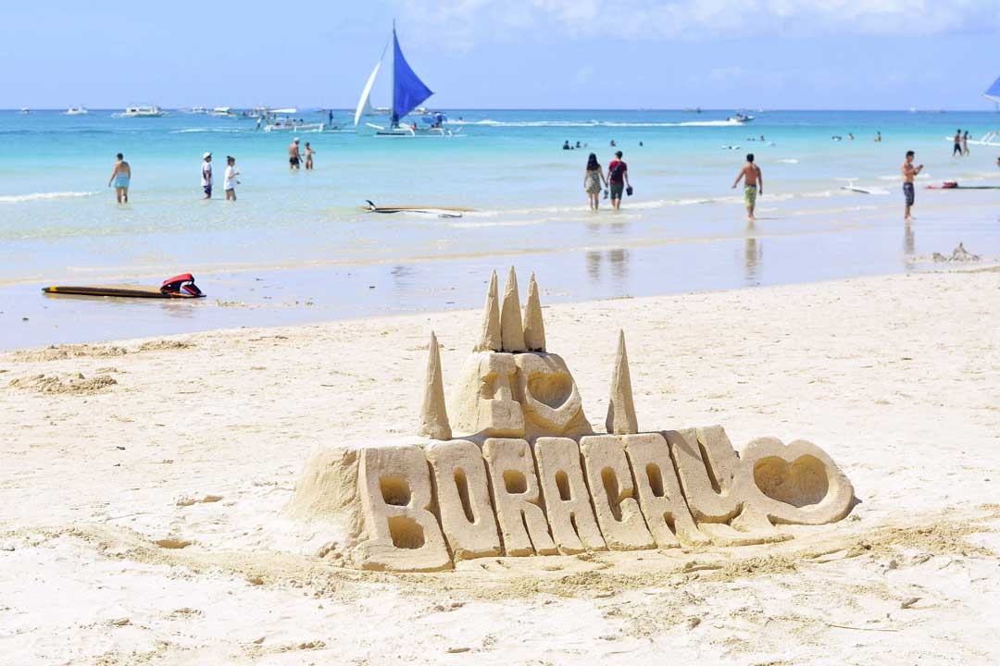
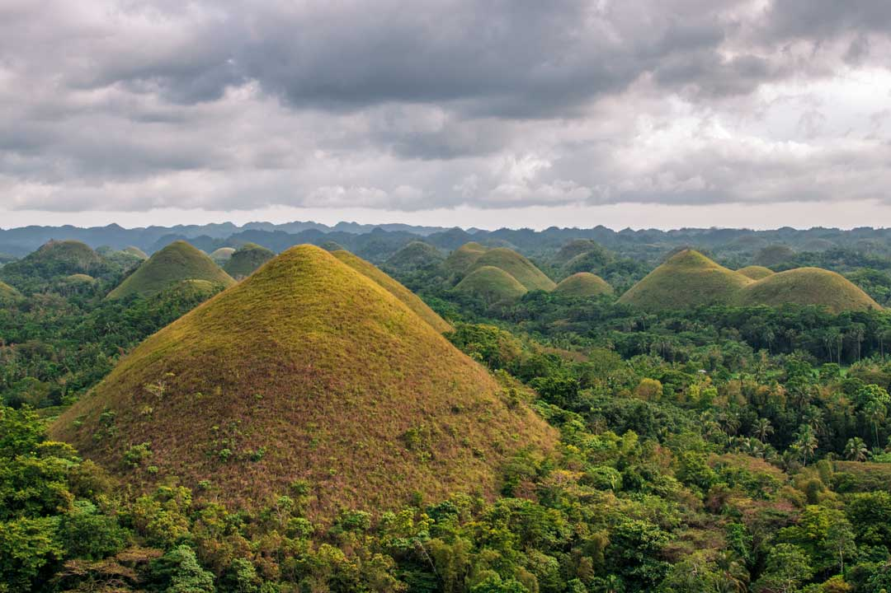
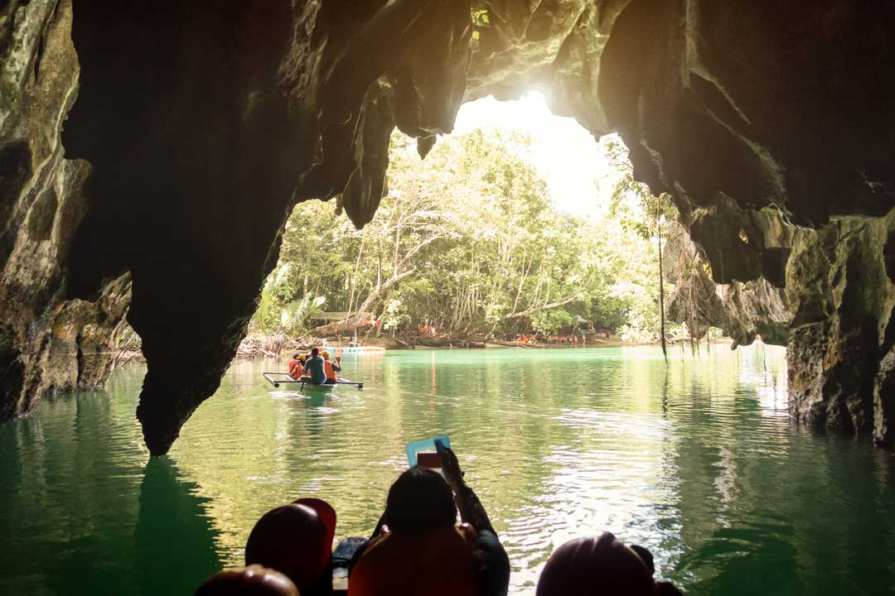
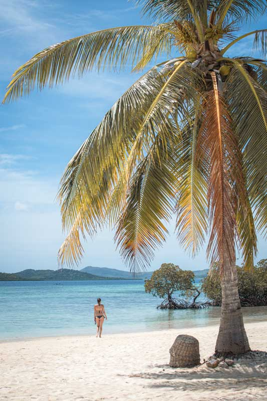
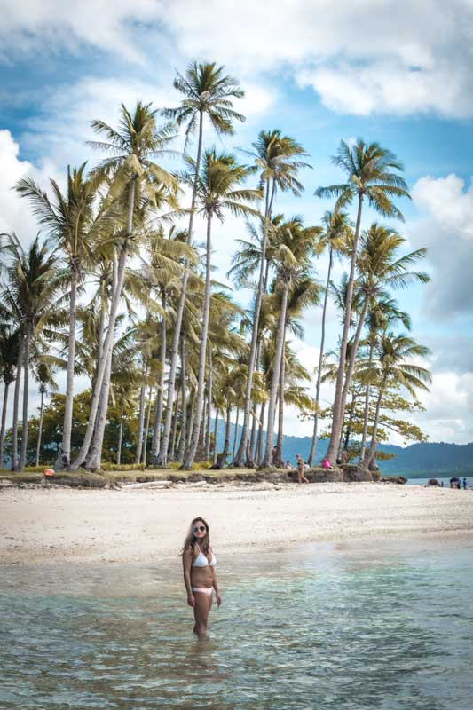
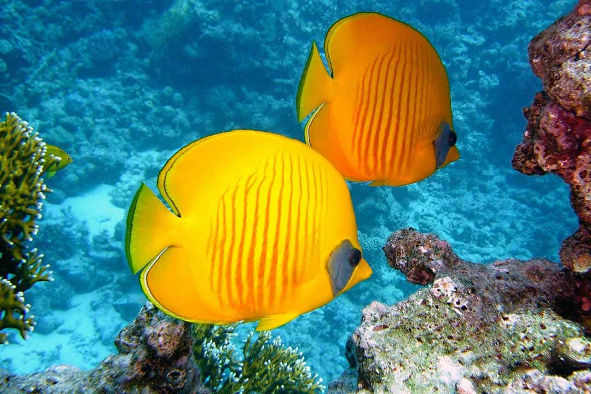
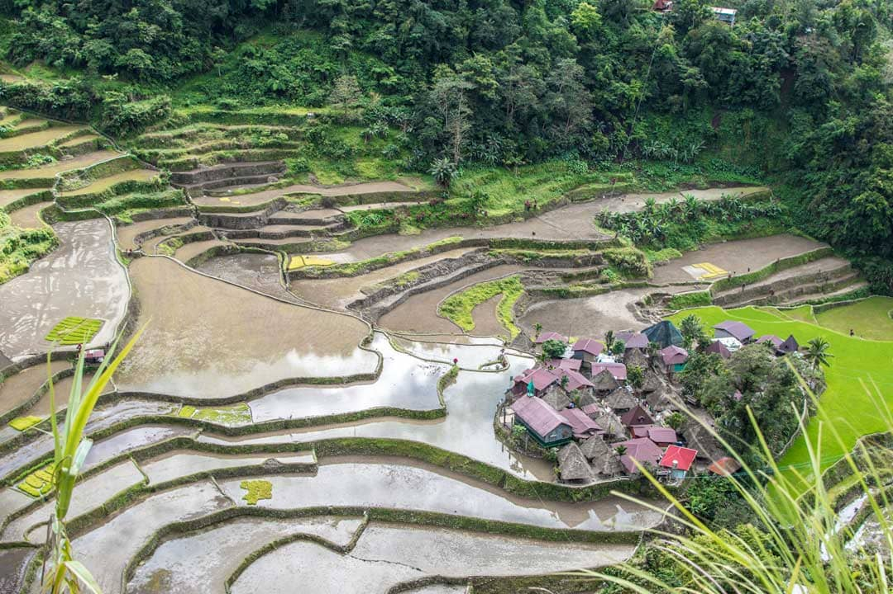
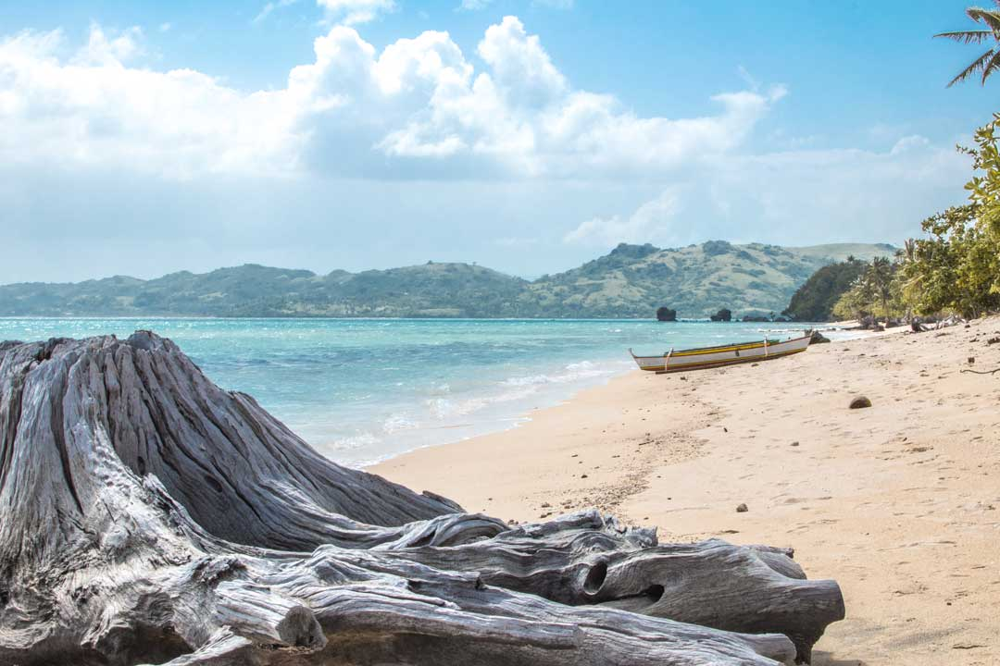

Boaracay

Boracay was the first big tourist destination in the Philippines. Even though it’s only 7km long and 1km wide, the tiny island features an impressive 4km postcard-perfect stretch of sand – the legendary White Beach. And that’s not all, a total of 17 tropical beaches are scattered through the island, making it an exemplar tropical paradise.
Boracay is continuously featured in ‘Best Beaches in The World’ rankings, which resulted in such an enormous influx of tourists that in 2018 the government had to close the island for six months, to restore the island to its former glory.
Chocolate Hils

Undoubtedly one of the most famous and curious landmarks in the Philippines is the Chocolate Hills. Varying in size from 30 to 120 meters, these 1,268 peculiarly shaped hills are like nothing else in the world.
The otherwordly view is best observed in the summer, when the usually lush mounds turn brown, earning their ‘Chocolate’ name. Even though the exact way of their formation is not clear, the locals have plenty of origin legends. My favorite one tells the story of a giant who used to live in the area. He fell in love with a girl from the village, but the girl didn’t like him back because he was too fat. The giant was heartbroken and started taking laxatives, thus creating the Chocolate Hills.
Tarsiers

This one is not like the others. The Philippine Tarsier is not an island, not a mountain, or a building – it’s an animal. The smallest primate in the world rocks a fuzzy baby Yoda look, have eyes bigger than its brain, and is one of Earth’s most peculiar creatures.
Lazing around in the trees during the day, those cute nocturnal predators spend their nights leaping through the jungle, hunting for small prey. They are incredibly sensitive, shy, and nervous and are known to commit suicide if kept in captivity. Since their eyeballs are too big, tarsiers can’t move their eyes around; instead, they move their neck, sometimes at 180′.
Such weird little fellas are an absolute landmark in my book.
Puerto Princesa's Subterranean River

Philippines’ westernmost province of Palawan is the country’s biggest and most astonishing island. A tropical paradise home to silk-sand beaches, lush flora, and incredible biodiversity.
The biggest highlight of the breathtaking island is the underground river of Puerto Princessa. Both a UNESCO World Heritage Site and one of the New 7 Wonders of Nature, this 8.2km long marvel of nature, is considered one of the most exciting experiences in the country. An eco-tour like no other, a journey through the river’s cave system will introduce you to the endemic wildlife of the area and reveal jaw-dropping limestone cliffs surrounded by picture-perfect pristine waters.
A unique place that deserves a spot on your Palawan itinerary.
Coron

I used to work with Filipinos, and when I asked them about the best place to see in their country, the answer was always the same – Coron.
Coron is the place where the locals go on vacation. Coron is the place where thousands of scuba divers from all around the world go for their dream-dives. Coron the place is where you’ll see some of the most outstanding natural treasures in the world.
Trust me with that, If you plan a trip to the Philippines, Coron should be the cornerstone of your journey. The limestone karst landscapes, pastoral beaches, crystal-clear lakes, and vibrant coral reefs coupled with the laid-back town atmosphere turn this island into, as cliche as it sounds, a paradise on Earth.
El Nido

Talking about the landmarks in the Philippines, we can’t miss El Nido. One of the most popular tourist destinations in the country, El Nido pride itself with its majestic limestone formations that gracefully overlooks the turquoise tropical waters. Situated at the northern end of Palawan, El Nido is the gateway to the stunning Bacuit Archipelago – home to 45 eye-watering islands and islets.
Featuring a lively nightlife, a lot of western food options, and even ATMs, El Nido is the perfect getaway for people looking for sun-kissed adventures combined with a bit of modern comfort.
Tubbataha Reefs

Covering an area of 96,828ha Tubbataha Reef Marine Park is the coral heart of the Philippines. Featuring a pristine coral reef, countless lagoons, and even two coral islands, Tubbataha is so spectacular that in 1993 it was inducted as a UNESCO World Heritage Site.
Located in the center of the Sulu Sea, these spectacular reefs are home to a great diversity of marine life, including dolphins, whales, sharks, and Napoleon wrasse. Reachable only by boat, Tubbataha is among the most sought-after landmarks in the Philippines, with divers often reserving their adventure years in advance.
Banaue Rice Terraces

The Banaue Rice Terraces are one of the most epic landmarks in the Philippines. Scratch that, it’s absolutely the most epic landmark there. A UNESCO World Heritage Site since 1995, the rice terraces were once a genius agricultural invention. For more than 2000 years, the knowledge behind their construction was handed down from one generation to the next, leading to today’s incredible landscape of great beauty that epitomizes the harmony between man and nature.
As weird as it sounds, the Banaue Rice Terraces are often overlooked by tourists. The beaches are indeed the Philippines’ main tourist-magnet, but skipping this glorious marvel is a tremendous mistake.
Caramoan National Park

It’s time to get to the idyllic tropical islands I promised. The main reason people visit the Philippines is the beaches. And there’s a good reason for that, most of them are indeed post-card perfect – an epitome of a tropical beach.
And you know the best part? They are relatively free of people. While in the neighboring beach-countries such as Thailand or Indonesia, it’s a Herculean task to find an empty beach, in the Philippines the heavenly golden shores are often crowd-free.
The Caramoan National Park is not your regular landmark. You probably won’t find it in any other Philippines must-see spots list. Caramoan is one of those rare places that still manage to keep its beauty under the radar. A set for the reality show ‘Survivor‘ this national park offers everything the most renounced islands in the region have but saves you the tourist hustle and the inflated prices. The most authentic landmark in the country, this peninsula, is a must-visit for travelers searching for off-beaten gems.